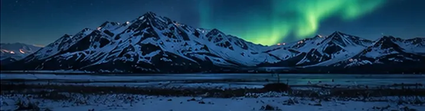
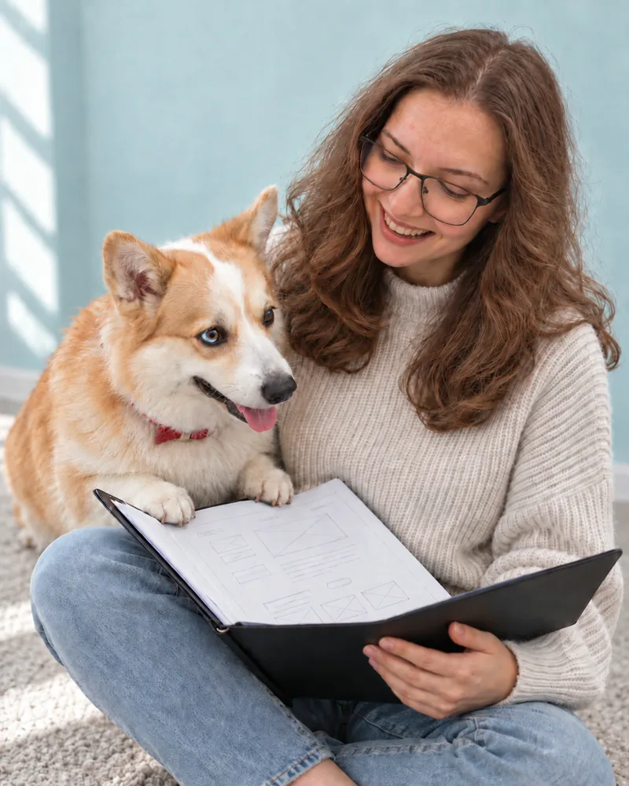
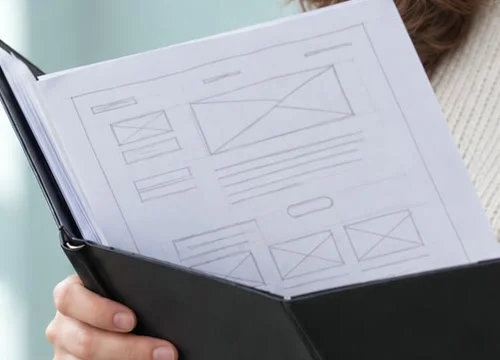

Много лет пела в хоре — теперь так же вслушиваюсь в интерфейсы и знаю, как убрать фальшь. Исследования, прототипы, UX/UI.
Сайты, оформление ВК и ИИ-видео для ивент‑агентств и малого бизнеса. Чтобы человек сразу понимал, куда нажать, а не звонил уточнять.
Не выношу, когда непонятно, куда ведёт действие и для кого всё это сделано. Такие места я слышу сразу. Проверьте свой слух — три коротких раунда.
Я нахожу на сайтах места, где люди теряются: не понимают, что вы предлагаете, куда нажать и что прочитать. Попробуйте найти такие места сами — три коротких вопроса.
Каждый вырос из реальной боли: своей, знакомых агентств или заказчиков. Внутри — исследование, решения и то, от чего отказалась.
Концепты и реальные заказы. Можно посмотреть, как я думаю, до того как писать.

AK—03Цифровой опыт · СайтРазговор, анкеты, интервью. Для кого и зачем.
Аудит и путь пользователя: где человек теряется, где звонит, где уходит. Ищу фальшивые ноты — места, где интерфейс говорит одно, а делает другое.
Самая плотная часть: каждый элемент встаёт на своё место и звучит вместе с остальными.
Тест на людях, правки, запуск.
Продуктовый дизайнер в штат, удалённо, по московскому времени. На ревью объясняю плюсы и минусы макета так, что решение принимается быстро.
Пригласить на собеседование →Анкеты, интервью, путь пользователя, поиск болей.
Сценарии, состояния, кликабельные прототипы и HTML.
Сетки, отступы, палитры, дизайн‑системы.
Визуал, видео, персонажи, ИИ‑консультанты в продукте.
Начать можно с разбора: покажу, где сайт теряет заявки и что поправить в первую очередь. Смотрю на UX/UI — удобство и внешний вид интерфейса.
Обсудить задачу в ВК →Где непонятно и что сделать
Структура, тексты, путь клиента
Структура, дизайн и сборка на Tilda
Для услуг, каталога, агентства
Обложки, виджеты, меню
Образ и три позы
Оживление фото, короткие ролики
Правки и обновления
Семь тактов — как журнал репетиций: что было и чему научилась.
Слышать целое, а не только свою партию.
Вести людей и репетировать, пока не зазвучит.
Работать офлайн со сроками, печатью и живыми заказчиками.
Днём — музыка с детьми, вечером — сайты. Держать оба темпа.
Объяснять заказчику сложное простыми словами: тариф, домен, поиск.
Проверять результат глазами: после ИИ лица всегда смотрю вручную.
Начинать с исследования, а не с картинки. Курс Form Factor, свои кейсы.
Живу в Мурманске. Сын Макар, корги Фокси и план вернуть в дом инструмент, чтобы снова играть. Работаю из дома: блокнот, Figma и много заметок на полях.


Пришлю кейсы подробнее, расскажу о процессе и отвечу на вопросы до собеседования.
Расскажите о задаче — отвечу в течение дня и предложу, с чего начать.